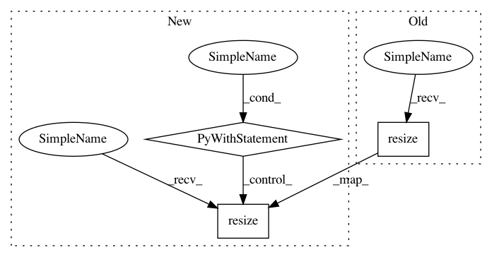

97aeda2a947c44cdef91d9276c2c38c02f37cda1,lib/pairwise_transform.py,,noise_scale,#,62
Before Change
dst.resize(w // 2, h // 2, filters[rand], blur)
if np.random.uniform() < rate:
dst = _noise(dst, level, chroma)
dst.resize(w, h, "box")
return wand_to_array(dst)
def crop_if_large(src, max_size):
After Change
filters = ("box", "lanczos")
blur = np.random.uniform(bmin, bmax)
rand = random.randint(0, len(filters)-1)
with iproc.array_to_wand(src) as tmp:
tmp.resize(w // 2, h // 2, filters[rand], blur)
if np.random.uniform() < rate:
tmp = _noise(tmp, level, chroma)
tmp.resize(w, h, "box")
dst = iproc.wand_to_array(tmp)
return dst
def crop_if_large(src, max_size):
In pattern: SUPERPATTERN
Frequency: 4
Non-data size: 3
Instances
Project Name: tsurumeso/waifu2x-chainer
Commit Name: 97aeda2a947c44cdef91d9276c2c38c02f37cda1
Time: 2017-02-08
Author: nstm101339@gmail.com
File Name: lib/pairwise_transform.py
Class Name:
Method Name: noise_scale
Project Name: tsurumeso/waifu2x-chainer
Commit Name: 97aeda2a947c44cdef91d9276c2c38c02f37cda1
Time: 2017-02-08
Author: nstm101339@gmail.com
File Name: lib/pairwise_transform.py
Class Name:
Method Name: scale